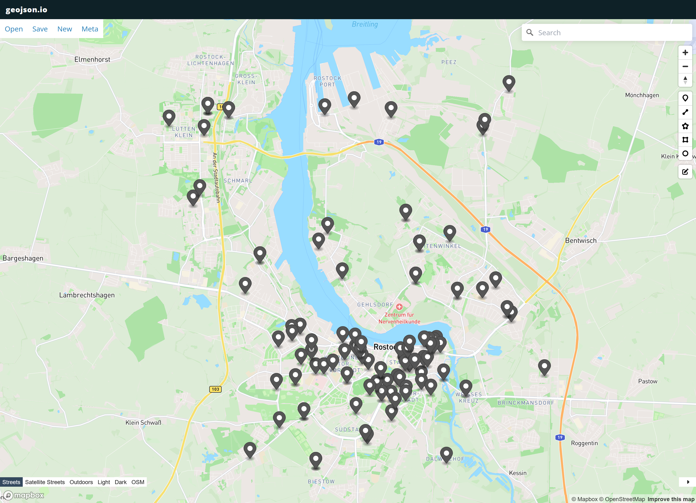

Relationale Datenbanken#
Praxisbeispiel#
Informationen sind in der Praxis meist über verschiedene Systeme und Tabellen verteilt und müssen oft zusammengeführt verarbeitet werden, um daraus anwendbares Wissen abzuleiten.
Die Hansestadt Rostock bietet zum Beispiel viele relevante Daten für Bau- und Umweltingenieure auf dem OpenData Portal Rostock.
Dort erhalten wir zum Beispiel:
Wie in den letzten Beispielen gezeigt können wir uns die Daten auch sehr einfach in Python herunter laden und anzeigen. Dafür nutzen wir das CSV Format das auf den Webseiten angeboten wird und die Python Pakete urllib und pandas. Wir öffnen zuerst die Datei im Internet mit urllib.request.urlopen und laden sie dann in Pandas als Tabelle mit pd.read_csv(f). Zuletzt zeigen wir die ersten 5 Zeilen der Tabelle mit .head() an.
import urllib.request
import pandas as pd
# Siehe https://www.opendata-hro.de/dataset/baustellen
with urllib.request.urlopen(f'https://geo.sv.rostock.de/download/opendata/baustellen/baustellen.csv') as f:
baustellen = pd.read_csv(f, usecols=["latitude", "longitude", "strasse_schluessel", "sparte", "von", "nach", "baubeginn", "bauende", "verkehrsbeeintraechtigungen", "baumassnahme"], parse_dates=["baubeginn", "bauende"])
baustellen.head()
| latitude | longitude | strasse_schluessel | sparte | von | nach | baubeginn | bauende | verkehrsbeeintraechtigungen | baumassnahme | |
|---|---|---|---|---|---|---|---|---|---|---|
| 0 | 54.129189 | 12.297446 | NaN | Straßenbau | Poppendorf | Clerum | 2023-09-18 00:00:00+02:00 | 2023-12-15 00:00:00+01:00 | zeitweise halbseitige Sperrung | Arbeiten an Geh-/Radwegen |
| 1 | 54.094154 | 12.101119 | 6880.0 | Hochbau | NaN | NaN | 2022-02-07 00:00:00+01:00 | 2024-02-08 00:00:00+01:00 | Sicherungsmaßnahmen entlang der Straße, Sicher... | Baustellenausfahrt -B-Plan Werftdreieck- |
| 2 | 54.059332 | 12.119356 | 10660.0 | Telefonnetz | 1 | 5 | 2023-10-02 00:00:00+02:00 | 2023-10-28 00:00:00+02:00 | Sicherungsmaßnahmen entlang des Gehwegs | 80 m Kabelgraben, 2 Baugruben für Telekom |
| 3 | 54.089122 | 12.134711 | 1580.0 | Telefonnetz | 5 | 12 | 2023-10-23 00:00:00+02:00 | 2023-11-04 00:00:00+01:00 | Sicherungsmaßnahmen entlang des Gehwegs | Kabelzieharbeiten Telekom -4m Kabelgraben, 2 K... |
| 4 | 54.092812 | 12.149981 | 13530.0 | Gebäudesanierung | 12 | NaN | 2023-07-24 00:00:00+02:00 | 2023-11-18 00:00:00+01:00 | Sicherungsmaßnahmen entlang der Straße, Sicher... | BE-Fläche für Materiallagerung, Schuttcontaine... |
# Siehe https://geo.sv.rostock.de/download/opendata/adressenliste
with urllib.request.urlopen(f'https://geo.sv.rostock.de/download/opendata/adressenliste/adressenliste.csv') as f:
adressenliste=pd.read_csv(f, usecols=["gemeinde_schluessel", "gemeindeteil_name", "strasse_name", "strasse_schluessel", "hausnummer", "hausnummer_zusatz", "postleitzahl"])
adressenliste.head()
| gemeinde_schluessel | gemeindeteil_name | strasse_name | strasse_schluessel | hausnummer | hausnummer_zusatz | postleitzahl | |
|---|---|---|---|---|---|---|---|
| 0 | 130030000000 | Gehlsdorf | Blockweg | 1430 | 3 | NaN | 18147 |
| 1 | 130030000000 | Schmarl | Industriestr. | 4010 | 8 | NaN | 18069 |
| 2 | 130030000000 | Schmarl | Industriestr. | 4010 | 11 | NaN | 18069 |
| 3 | 130030000000 | Evershagen | Bertolt-Brecht-Str. | 1340 | 17 | a | 18106 |
| 4 | 130030000000 | Evershagen | An der Jägerbäk | 680 | 7 | NaN | 18069 |
# Siehe https://www.opendata-hro.de/dataset/gemeinden_mecklenburg-vorpommern
with urllib.request.urlopen(f'https://geo.sv.rostock.de/download/opendata/gemeinden_mecklenburg-vorpommern/gemeinden_mecklenburg-vorpommern.csv') as f:
gemeinden=pd.read_csv(f, usecols=["kreis_name", "kreis_schluessel", "gemeindeverband_name", "gemeindeverband_schluessel", "gemeinde_name", "gemeinde_schluessel", "WKT"])
gemeinden.head()
---------------------------------------------------------------------------
ValueError Traceback (most recent call last)
Cell In[4], line 3
1 # Siehe https://www.opendata-hro.de/dataset/gemeinden_mecklenburg-vorpommern
2 with urllib.request.urlopen(f'https://geo.sv.rostock.de/download/opendata/gemeinden_mecklenburg-vorpommern/gemeinden_mecklenburg-vorpommern.csv') as f:
----> 3 gemeinden=pd.read_csv(f, usecols=["kreis_name", "kreis_schluessel", "gemeindeverband_name", "gemeindeverband_schluessel", "gemeinde_name", "gemeinde_schluessel", "WKT"])
4 gemeinden.head()
File ~/miniconda3/envs/lehre/lib/python3.11/site-packages/pandas/io/parsers/readers.py:948, in read_csv(filepath_or_buffer, sep, delimiter, header, names, index_col, usecols, dtype, engine, converters, true_values, false_values, skipinitialspace, skiprows, skipfooter, nrows, na_values, keep_default_na, na_filter, verbose, skip_blank_lines, parse_dates, infer_datetime_format, keep_date_col, date_parser, date_format, dayfirst, cache_dates, iterator, chunksize, compression, thousands, decimal, lineterminator, quotechar, quoting, doublequote, escapechar, comment, encoding, encoding_errors, dialect, on_bad_lines, delim_whitespace, low_memory, memory_map, float_precision, storage_options, dtype_backend)
935 kwds_defaults = _refine_defaults_read(
936 dialect,
937 delimiter,
(...)
944 dtype_backend=dtype_backend,
945 )
946 kwds.update(kwds_defaults)
--> 948 return _read(filepath_or_buffer, kwds)
File ~/miniconda3/envs/lehre/lib/python3.11/site-packages/pandas/io/parsers/readers.py:611, in _read(filepath_or_buffer, kwds)
608 _validate_names(kwds.get("names", None))
610 # Create the parser.
--> 611 parser = TextFileReader(filepath_or_buffer, **kwds)
613 if chunksize or iterator:
614 return parser
File ~/miniconda3/envs/lehre/lib/python3.11/site-packages/pandas/io/parsers/readers.py:1448, in TextFileReader.__init__(self, f, engine, **kwds)
1445 self.options["has_index_names"] = kwds["has_index_names"]
1447 self.handles: IOHandles | None = None
-> 1448 self._engine = self._make_engine(f, self.engine)
File ~/miniconda3/envs/lehre/lib/python3.11/site-packages/pandas/io/parsers/readers.py:1723, in TextFileReader._make_engine(self, f, engine)
1720 raise ValueError(msg)
1722 try:
-> 1723 return mapping[engine](f, **self.options)
1724 except Exception:
1725 if self.handles is not None:
File ~/miniconda3/envs/lehre/lib/python3.11/site-packages/pandas/io/parsers/c_parser_wrapper.py:140, in CParserWrapper.__init__(self, src, **kwds)
136 assert self.orig_names is not None
137 if self.usecols_dtype == "string" and not set(usecols).issubset(
138 self.orig_names
139 ):
--> 140 self._validate_usecols_names(usecols, self.orig_names)
142 # error: Cannot determine type of 'names'
143 if len(self.names) > len(usecols): # type: ignore[has-type]
144 # error: Cannot determine type of 'names'
File ~/miniconda3/envs/lehre/lib/python3.11/site-packages/pandas/io/parsers/base_parser.py:969, in ParserBase._validate_usecols_names(self, usecols, names)
967 missing = [c for c in usecols if c not in names]
968 if len(missing) > 0:
--> 969 raise ValueError(
970 f"Usecols do not match columns, columns expected but not found: "
971 f"{missing}"
972 )
974 return usecols
ValueError: Usecols do not match columns, columns expected but not found: ['WKT']
Wenn wir die Tabellen vergleichen, so stellen wir fest, dass alle eine etwas andere Struktur haben und meist nur einen Teil der Informationen erhalten. Wollen wir zum Beispiel wissen was die Bevölkerungsdichte in den Stadtbezirken mit Baustellen ist, so lässen sich dieses Wissen nicht sofort ableiten.
Tabellen in SQLite speichern mit Pandas#
Um diese Daten langfristig zu speichern wollen wir uns eine Datenbank anlegen. Da die Daten ja bereits als Tabellen vorliegen, nutzen wir eine relationale Datenbank. Eine sehr einfache, lokale relationale Datenbank, die ohne Server auskommt ist SQLite. Sie ist bereits in Python enthalten. Wir erzeugen uns eine neue Datenbank indem wir eine Verbindung zu einer neuen Datenbankdatei anlegen.
import sqlite3
# Create a SQL connection to our SQLite database
con = sqlite3.connect("opendatahro.sqlite")
Wir schauen uns später an wie wir Tabellen direkt mit SQL erzeugen. Pandas hat diese Funktion bereits eingebaut, so dass wir unsere Tabelle direkt in der SQLite Datenbank speichern können.
baustellen.to_sql("baustellen", con, if_exists="replace")
adressenliste.to_sql("adressenliste", con, if_exists="replace")
gemeinden.to_sql("gemeinden", con, if_exists="replace")
---------------------------------------------------------------------------
ProgrammingError Traceback (most recent call last)
Cell In[6], line 1
----> 1 baustellen.to_sql("baustellen", con, if_exists="replace")
2 adressenliste.to_sql("adressenliste", con, if_exists="replace")
3 gemeinden.to_sql("gemeinden", con, if_exists="replace")
File ~/miniconda3/envs/lehre/lib/python3.11/site-packages/pandas/util/_decorators.py:333, in deprecate_nonkeyword_arguments.<locals>.decorate.<locals>.wrapper(*args, **kwargs)
327 if len(args) > num_allow_args:
328 warnings.warn(
329 msg.format(arguments=_format_argument_list(allow_args)),
330 FutureWarning,
331 stacklevel=find_stack_level(),
332 )
--> 333 return func(*args, **kwargs)
File ~/miniconda3/envs/lehre/lib/python3.11/site-packages/pandas/core/generic.py:3008, in NDFrame.to_sql(self, name, con, schema, if_exists, index, index_label, chunksize, dtype, method)
2813 """
2814 Write records stored in a DataFrame to a SQL database.
2815
(...)
3004 [(1,), (None,), (2,)]
3005 """ # noqa: E501
3006 from pandas.io import sql
-> 3008 return sql.to_sql(
3009 self,
3010 name,
3011 con,
3012 schema=schema,
3013 if_exists=if_exists,
3014 index=index,
3015 index_label=index_label,
3016 chunksize=chunksize,
3017 dtype=dtype,
3018 method=method,
3019 )
File ~/miniconda3/envs/lehre/lib/python3.11/site-packages/pandas/io/sql.py:788, in to_sql(frame, name, con, schema, if_exists, index, index_label, chunksize, dtype, method, engine, **engine_kwargs)
783 raise NotImplementedError(
784 "'frame' argument should be either a Series or a DataFrame"
785 )
787 with pandasSQL_builder(con, schema=schema, need_transaction=True) as pandas_sql:
--> 788 return pandas_sql.to_sql(
789 frame,
790 name,
791 if_exists=if_exists,
792 index=index,
793 index_label=index_label,
794 schema=schema,
795 chunksize=chunksize,
796 dtype=dtype,
797 method=method,
798 engine=engine,
799 **engine_kwargs,
800 )
File ~/miniconda3/envs/lehre/lib/python3.11/site-packages/pandas/io/sql.py:2441, in SQLiteDatabase.to_sql(self, frame, name, if_exists, index, index_label, schema, chunksize, dtype, method, engine, **engine_kwargs)
2431 table = SQLiteTable(
2432 name,
2433 self,
(...)
2438 dtype=dtype,
2439 )
2440 table.create()
-> 2441 return table.insert(chunksize, method)
File ~/miniconda3/envs/lehre/lib/python3.11/site-packages/pandas/io/sql.py:1059, in SQLTable.insert(self, chunksize, method)
1056 break
1058 chunk_iter = zip(*(arr[start_i:end_i] for arr in data_list))
-> 1059 num_inserted = exec_insert(conn, keys, chunk_iter)
1060 # GH 46891
1061 if num_inserted is not None:
File ~/miniconda3/envs/lehre/lib/python3.11/site-packages/pandas/io/sql.py:2137, in SQLiteTable._execute_insert(self, conn, keys, data_iter)
2135 def _execute_insert(self, conn, keys, data_iter) -> int:
2136 data_list = list(data_iter)
-> 2137 conn.executemany(self.insert_statement(num_rows=1), data_list)
2138 return conn.rowcount
ProgrammingError: Error binding parameter 8: type 'Timestamp' is not supported
Daten aus Tabellen abfragen mit SELECT#
SQL ist die Standartsprache um mit relationalen Datenbanken zu arbeiten. Sie bietet verschiedene Befehle um Tabellen zu definieren, Daten in ihnen zu speichern als auch die Daten abzufragen. Letzteres wird mit dem SELECT Befehl gemacht. SQL orientiert sich dabei etwas an natürlicher Sprache. Man fragt in SQL quasi nach den Daten aus (FROM) einer bestimmten Tabelle . Um zum Beispiel alle Spalten aus einer Tabelle abzufragen nutzen wir den Befehl mit dem Platzhalter * (=alle Spalten).
sql='SELECT * FROM baustellen;'
Um den SQL Befehl an die Datenbank zu senden, erzeugen wir aus unserer Datenbankverbindung con einen neuen Cursor cur. Mit cur.execute(sql) führen wir den SQL Befehl aus und die Datenbank sendet und die Datenbank fängt an uns alle Ergebnisse der Anfrage Zeile für Zeile zurück zu senden. Der Cursor zeigt dabei immer auf die aktuelle Zeile. Damit will man vermeiden alle Daten, welche sehr (sehr) viele Zeilen sein können, auf einmal zu senden und damit ggf. das Netzwerk oder das Programm zu überlasten.
cur = con.cursor()
rows=cur.execute(sql)
for row in rows:
print(row)
print(type(row))
---------------------------------------------------------------------------
NameError Traceback (most recent call last)
Cell In[8], line 6
4 for row in rows:
5 print(row)
----> 6 print(type(row))
NameError: name 'row' is not defined
Wie wir sehen erhalten wir jede Zeile als Tuple zurück. Dabei kennen wir in diesem Fall nicht die Spaltennamen der Werte. Wir können diese vom Cursor abfragen mit
cur.description
(('index', None, None, None, None, None, None),
('latitude', None, None, None, None, None, None),
('longitude', None, None, None, None, None, None),
('strasse_schluessel', None, None, None, None, None, None),
('sparte', None, None, None, None, None, None),
('von', None, None, None, None, None, None),
('nach', None, None, None, None, None, None),
('baubeginn', None, None, None, None, None, None),
('bauende', None, None, None, None, None, None),
('verkehrsbeeintraechtigungen', None, None, None, None, None, None),
('baumassnahme', None, None, None, None, None, None))
Meist fragt man allerdings nicht alle Spalten einer Tabelle mit dem Platzhalter * ab, sonder gibt geziehlt die Spalten an, die man erhalten möchte. So kann man unnötigen Datenverkehr spaaren.
sql='SELECT strasse_schluessel, sparte, latitude, longitude, baumassnahme FROM baustellen;'
for row in cur.execute(sql):
print(row)
Filtern von Ergebnissen mit WHERE#
Oft will man nur bestimmte Zeilen aus einer Tabelle in einer Datenbank abrufen. Diese Auswahl definiert man mit dem SQL Befehl WHERE und zusätzlichen logischen Vergleichsoperatoren.
Wollen wir zum Beispiel nur die Baustellen haben die einen Baubegin in 2023 haben, so können wir definieren
sql='''SELECT strasse_schluessel, sparte, latitude, longitude, baumassnahme, baubeginn, bauende
FROM baustellen
WHERE baubeginn >= '2023-01-01 00:00:00+01';'''
for row in cur.execute(sql):
print(row)
Mehrere Bedingungen können durch logische Operatoren wie ‘AND’, ‘OR’ oder ‘NOT’ verknüpft werden. Wollen wir alle Baustellen die im 1 Quartal 2023 angefangen und beendet werden, so schreiben wir
sql='''SELECT strasse_schluessel, sparte, latitude, longitude, baumassnahme, baubeginn, bauende
FROM baustellen
WHERE baubeginn >= '2023-01-01 00:00:00+01' AND bauende < '2024-04-01 00:00:00+01';'''
for row in cur.execute(sql):
print(row)
Daten Aggregieren#
Da die Ergebnisse Zeile für Zeile übertragen werden, ist die Anzahl der Ergebnisse auch nicht unbedingt vorher bekannt. Deshalb unterstützen alle relationale Datenbanken die Aggregatfunktion count(*), um die Anzahl der Zeilen der Ergebnisse zurück zu geben.
sql='SELECT count(*) FROM baustellen;'
for row in cur.execute(sql):
print(row)
(0,)
Hier erhalten wir nur eine Ergebniszeile zurück, mit der Anzahl der Zeilen in der Tabelle.
Darüber hinaus unerstützt SQL viele Aggregierfunktionen. Wollen wir zum Beispiel in unserem Beispieldatensatz die minimalen Baubeginn aller Baustellen identifizieren nutzen wir die min()-Funktion mit dem entsprechenden Spaltennamen.
sql='SELECT min(baubeginn) FROM baustellen;'
for row in cur.execute(sql):
print(row)
(None,)
Wieder erhalten wir ein Ergebnis mit dem Datum. Das entscheidende ist, dass diese Aggregatfunktionen direkt in der Datenbank ausgeführt wird. Wir müssen also nicht alle Daten runterladen, um einfache Kennwerte wie die Anzahl, das Minimum oder Maximum von Spalten zu erhalten. Dabei können wir auch mehrere Aggregierungen in einer Anfrage und mathematische Berechnungen ausführen. Das folgende Beispiel gibt uns die Anzahl der Baustellen sowie den minimalen Baubeginn und das maximale Bauende sowie die Baudauer. Die Baudauer berechnen wir direkt in der Datenbank als den arithmethischen Durchschnitt avg der Differenz zwischen Bauende und Baubeginn in Tagen im Julianischen Kalender.
sql='''SELECT sparte, count(*), min(baubeginn), max(bauende), avg(JulianDay(bauende)-JulianDay(baubeginn))
FROM baustellen;'''
for row in cur.execute(sql):
print(row)
(None, 0, None, None, None)
Statistiken Extrahieren mit Aggregieren von Gruppen, Sortieren und Limitieren#
Das letzte Beispiel zeigt bereits, wie wir SQL nutzen können um Statistiken der Daten in einer Datenbank zu berechnen. Das wird besonders dann interessant, wenn wir das mit Gruppierungen kombinieren. Gruppierungen fassen die abgefragten Zeilen in der Tabelle entlang den angegebenen Spaltennamen als Gruppe zusammen. Wollen wir zum Beispiel wissen, wie lange im Durchschnitt die Dauer der Baustellen je nach sparte ist, so können wir diese Spalte als Gruppe definieren und die mittleren Baudauer für jede Gruppe bestimmen. Dafür bietet SQL den Befehl GROUP BY an, hinter dem wir die Spalte angeben nach welcher gruppiert werden soll.
sql='''SELECT sparte, count(*), min(baubeginn), max(bauende), avg(JulianDay(bauende)-JulianDay(baubeginn))
FROM baustellen
GROUP BY sparte;'''
for row in cur.execute(sql):
print(row)
Wir sehen jetzt, dass ‘Hochbau’ die größte Gruppen mit 29 Zeilen (Baustellen) bildet, gefolgt von Straßenbau mit 14 Zeilen. Hochbau braucht Hochbau mit 507 Tagen fast doppelt so lange wie Strassenbau mit 274 Tagen.
(Da wir die Daten tagesaktuell von Opendata-HRO laden, können sich diese Beispielzahlen im Verlauf der Zeit durchaus ändern).
Um die Ergebnisse zu sortieren bietet SQL den ORDER BY Befehl. Wollen wir die Ergebnisse nach der Dauer absteigend (DESC) sortieren, so schreiben wir:
sql='''SELECT sparte, count(*), min(baubeginn), max(bauende), avg(JulianDay(bauende)-JulianDay(baubeginn)) as Baudauer
FROM baustellen
GROUP BY sparte
ORDER BY Baudauer DESC;''' # ASC - Aufsteigend, DESC - Absteigend
for row in cur.execute(sql):
print(row)
Sind wir jetzt nur an der Top 3 interessiert, so können wir mit LIMIT die Anzahl an Ergebnissen die maximal zurück gegeben werden.
sql='''SELECT sparte, count(*), min(baubeginn), max(bauende), avg(JulianDay(bauende)-JulianDay(baubeginn)) as Baudauer
FROM baustellen
GROUP BY sparte
ORDER BY Baudauer DESC
LIMIT 3;'''
for row in cur.execute(sql):
print(row)
Daten aus mehreren Tabellen verknüpfen und gleichzeitig abfragen mit JOIN#
In unserm Beispiel kennen wir nicht die Straßennamen der Baustelle, sondern nur eine obskure ID namens strasse_schluessel. Diese finden wir auch in der Tabelle adressenliste zusammen mit dem gesuchten Straßennamen. Wir müssen also nun eine Abfrage über beide Tabellen gemeinsam durchführen, um auch die Straße für die Baustellen zu erfahren. Dafür nutzt man den SQL Befehl JOIN und gibt an wo (WHERE) die Ergebnisse zusammenzuführen sind indem man eine Gleichheitsbedingung spezifiziert. Da die Spalte strasse_schluessel in beiden Tabellen vorkommt und es nicht ganz eindeutig ist auf welche man sich bezieht, gibt man jetzt auch bei den Spaltennamen die Tabelle mit der Dotnotation mit an, also:
sql='''SELECT baustellen.strasse_schluessel, baustellen.sparte, baustellen.latitude, baustellen.longitude, baustellen.baumassnahme, baustellen.baubeginn, baustellen.bauende,
adressenliste.gemeindeteil_name, adressenliste.strasse_name
FROM baustellen
JOIN adressenliste
WHERE baustellen.strasse_schluessel=adressenliste.strasse_schluessel;'''
for row in cur.execute(sql):
print(row)
---------------------------------------------------------------------------
OperationalError Traceback (most recent call last)
Cell In[19], line 6
1 sql='''SELECT baustellen.strasse_schluessel, baustellen.sparte, baustellen.latitude, baustellen.longitude, baustellen.baumassnahme, baustellen.baubeginn, baustellen.bauende,
2 adressenliste.gemeindeteil_name, adressenliste.strasse_name
3 FROM baustellen
4 JOIN adressenliste
5 WHERE baustellen.strasse_schluessel=adressenliste.strasse_schluessel;'''
----> 6 for row in cur.execute(sql):
7 print(row)
OperationalError: no such table: adressenliste
Da diese ständige Wiederholung der Tabellennamen sehr schreiblastig ist, kann man in SQL mit dem Befehl AS auch kürzere Namen für Spalten und Tabellen verwenden
sql='''SELECT b.strasse_schluessel, b.sparte, b.latitude, b.longitude, b.baumassnahme, b.baubeginn, b.bauende,
a.gemeindeteil_name, a.strasse_name
FROM baustellen AS b
JOIN adressenliste AS a
WHERE b.strasse_schluessel=a.strasse_schluessel;'''
for row in cur.execute(sql):
print(row)
---------------------------------------------------------------------------
OperationalError Traceback (most recent call last)
Cell In[20], line 6
1 sql='''SELECT b.strasse_schluessel, b.sparte, b.latitude, b.longitude, b.baumassnahme, b.baubeginn, b.bauende,
2 a.gemeindeteil_name, a.strasse_name
3 FROM baustellen AS b
4 JOIN adressenliste AS a
5 WHERE b.strasse_schluessel=a.strasse_schluessel;'''
----> 6 for row in cur.execute(sql):
7 print(row)
OperationalError: no such table: adressenliste
Jetzt kommt es allerdings zu vielen Dopplungen in unseren Ergebnissen, da jede Ergebniszeile aus der Tabelle baustellen mit jeder Zeile aus der Tabelle adressenliste wiederholt wird, weil in der letzteren ja eine Straße mit dem gleichen strasse_schluessel mehrmals vorkommt. Diese Duplikate wollen wir rausfiltern mit dem SQL Befehl DISTINCT
sql='''SELECT DISTINCT b.strasse_schluessel, b.sparte, b.latitude, b.longitude, b.baumassnahme, a.gemeindeteil_name, a.strasse_name
FROM baustellen AS b
JOIN adressenliste AS a
WHERE b.strasse_schluessel=a.strasse_schluessel;'''
for row in cur.execute(sql):
print(row)
---------------------------------------------------------------------------
OperationalError Traceback (most recent call last)
Cell In[21], line 5
1 sql='''SELECT DISTINCT b.strasse_schluessel, b.sparte, b.latitude, b.longitude, b.baumassnahme, a.gemeindeteil_name, a.strasse_name
2 FROM baustellen AS b
3 JOIN adressenliste AS a
4 WHERE b.strasse_schluessel=a.strasse_schluessel;'''
----> 5 for row in cur.execute(sql):
6 print(row)
OperationalError: no such table: adressenliste
Jetzt kennen wir schon den richtigen Straßenname zu jeder Baustelle, allerdings fehlt uns die Gemeinde. Hierfür verknüpfen wir die Daten mit der Tabelle
gemeinden. Dafür ergänzen wir die zusätzliche Tabelle im JOIN und definieren die weitere Verknüpfungsbedingung auf die Spalte gemeinde_schluessel.
sql='''SELECT DISTINCT b.strasse_schluessel, b.sparte, b.latitude, b.longitude, b.baumassnahme, a.gemeindeteil_name, a.strasse_name, g.gemeinde_name
FROM baustellen AS b
JOIN adressenliste AS a, gemeinden AS g
WHERE b.strasse_schluessel=a.strasse_schluessel AND a.gemeinde_schluessel=g.gemeinde_schluessel;'''
for row in cur.execute(sql):
print(row)
---------------------------------------------------------------------------
OperationalError Traceback (most recent call last)
Cell In[22], line 5
1 sql='''SELECT DISTINCT b.strasse_schluessel, b.sparte, b.latitude, b.longitude, b.baumassnahme, a.gemeindeteil_name, a.strasse_name, g.gemeinde_name
2 FROM baustellen AS b
3 JOIN adressenliste AS a, gemeinden AS g
4 WHERE b.strasse_schluessel=a.strasse_schluessel AND a.gemeinde_schluessel=g.gemeinde_schluessel;'''
----> 5 for row in cur.execute(sql):
6 print(row)
OperationalError: no such table: adressenliste
Es gibt verschiedene Typen von Joins je nachdem ob man nur die Ergebnisse haben will für die es:
Einträge in beiden Tabellen gibt (INNER, Default)
Einträge in mindestens der ersten Tabelle gibt (RIGHT)
Einträge in mindestens der zweiten Tabelle gibt (LEFT)
Einträge in mindestens der zweiten Tabelle gibt (OUTER)
Der NATURAL JOIN Typen vereinfachen die Schreibarbeit. Beim NATURAL JOIN werden dabei die Spalten gematcht, welche identisch heißen. Er funktioniert somit nur wenn die Spalten in den zu matchenden Tabellen identisch heißen und alle anderen Spalten andere Namen haben, was eher seltener der Fall ist.
sqlNJ='''SELECT DISTINCT strasse_schluessel, sparte, latitude, longitude, baumassnahme, gemeindeteil_name, strasse_name, gemeinde_name
FROM baustellen
NATURAL JOIN adressenliste, gemeinden;'''
for row in cur.execute(sqlNJ):
print(row)
---------------------------------------------------------------------------
OperationalError Traceback (most recent call last)
Cell In[23], line 4
1 sqlNJ='''SELECT DISTINCT strasse_schluessel, sparte, latitude, longitude, baumassnahme, gemeindeteil_name, strasse_name, gemeinde_name
2 FROM baustellen
3 NATURAL JOIN adressenliste, gemeinden;'''
----> 4 for row in cur.execute(sqlNJ):
5 print(row)
OperationalError: no such table: adressenliste
Warning
Es funktioniert auch in diesem Beispiel nicht. Es werden zwar Ergebnisse zurück gegeben, allerdings, deutlich mehr als im letzten Join. Die Gemeinden werden hier kreuzkombiniert. Man sieht also, dass der NATURAL JOIN mit Vorsicht zu benutzen ist.
Daten mit SQL und Pandas abfragen und mit GeoJSON visualisieren#
Wir haben am Anfang ja die Tabellen in der SQLite Datenbank bereits mit Pandas erzeugt. Wir können Pandas auch nutzen um Daten aus einer SQL Anfrage direkt als Dataframe (Pandas Tabelle) zu laden.
Fügen wir einmal die Beispiele zusammen und lassen uns alle Baustellen mit Strasse und Gemeinde im ersten Quartal 2023 auf einer Karte anzeigen. Die SQL Abfrage dazu sieht wie folgt aus
sql='''SELECT DISTINCT b.strasse_schluessel, b.sparte, b.latitude, b.longitude, b.baumassnahme, b.baubeginn, b.bauende, a.gemeindeteil_name, a.strasse_name, g.gemeinde_name
FROM baustellen AS b
JOIN adressenliste AS a, gemeinden AS g
WHERE b.strasse_schluessel=a.strasse_schluessel AND a.gemeinde_schluessel=g.gemeinde_schluessel
AND b.baubeginn >= '2023-01-01 00:00:00+01' AND b.bauende < '2024-04-01 00:00:00+01';'''
Wir führen die SQL Abfrage direkt mit der Pandas Funktion pd.read_sql(sql, con) aus und erzeugen uns einen DataFrame der die gewünschten Daten enthält.
baustellen_mit_strasse = pd.read_sql(sql, con)
baustellen_mit_strasse
---------------------------------------------------------------------------
OperationalError Traceback (most recent call last)
File ~/miniconda3/envs/lehre/lib/python3.11/site-packages/pandas/io/sql.py:2264, in SQLiteDatabase.execute(self, sql, params)
2263 try:
-> 2264 cur.execute(sql, *args)
2265 return cur
OperationalError: no such table: adressenliste
The above exception was the direct cause of the following exception:
DatabaseError Traceback (most recent call last)
Cell In[25], line 1
----> 1 baustellen_mit_strasse = pd.read_sql(sql, con)
2 baustellen_mit_strasse
File ~/miniconda3/envs/lehre/lib/python3.11/site-packages/pandas/io/sql.py:654, in read_sql(sql, con, index_col, coerce_float, params, parse_dates, columns, chunksize, dtype_backend, dtype)
652 with pandasSQL_builder(con) as pandas_sql:
653 if isinstance(pandas_sql, SQLiteDatabase):
--> 654 return pandas_sql.read_query(
655 sql,
656 index_col=index_col,
657 params=params,
658 coerce_float=coerce_float,
659 parse_dates=parse_dates,
660 chunksize=chunksize,
661 dtype_backend=dtype_backend,
662 dtype=dtype,
663 )
665 try:
666 _is_table_name = pandas_sql.has_table(sql)
File ~/miniconda3/envs/lehre/lib/python3.11/site-packages/pandas/io/sql.py:2328, in SQLiteDatabase.read_query(self, sql, index_col, coerce_float, parse_dates, params, chunksize, dtype, dtype_backend)
2317 def read_query(
2318 self,
2319 sql,
(...)
2326 dtype_backend: DtypeBackend | Literal["numpy"] = "numpy",
2327 ) -> DataFrame | Iterator[DataFrame]:
-> 2328 cursor = self.execute(sql, params)
2329 columns = [col_desc[0] for col_desc in cursor.description]
2331 if chunksize is not None:
File ~/miniconda3/envs/lehre/lib/python3.11/site-packages/pandas/io/sql.py:2276, in SQLiteDatabase.execute(self, sql, params)
2273 raise ex from inner_exc
2275 ex = DatabaseError(f"Execution failed on sql '{sql}': {exc}")
-> 2276 raise ex from exc
DatabaseError: Execution failed on sql 'SELECT DISTINCT b.strasse_schluessel, b.sparte, b.latitude, b.longitude, b.baumassnahme, b.baubeginn, b.bauende, a.gemeindeteil_name, a.strasse_name, g.gemeinde_name
FROM baustellen AS b
JOIN adressenliste AS a, gemeinden AS g
WHERE b.strasse_schluessel=a.strasse_schluessel AND a.gemeinde_schluessel=g.gemeinde_schluessel
AND b.baubeginn >= '2023-01-01 00:00:00+01' AND b.bauende < '2024-04-01 00:00:00+01';': no such table: adressenliste
Die Tabelle enthält ja bereits die Latitude und Longitude. Mit dem Paket pandas_geojson können wir aus den Dataframe in ein GeoJSON FeatureCollection umwandeln. Wir installieren zuerst das Paket mit pip.
pip install pandas_geojson --quiet
Note: you may need to restart the kernel to use updated packages.
from pandas_geojson import to_geojson
geo_json = to_geojson(df=baustellen_mit_strasse, lat='latitude', lon='longitude',
properties=['strasse_name','sparte','baumassnahme', 'baubeginn', 'bauende'])
---------------------------------------------------------------------------
NameError Traceback (most recent call last)
Cell In[27], line 3
1 from pandas_geojson import to_geojson
----> 3 geo_json = to_geojson(df=baustellen_mit_strasse, lat='latitude', lon='longitude',
4 properties=['strasse_name','sparte','baumassnahme', 'baubeginn', 'bauende'])
NameError: name 'baustellen_mit_strasse' is not defined
Jetzt können wir uns die Baustellen mit dem schon bekannten Paket geojsonio auf einer Karte visualisieren.
import json
import geojsonio
geojsonio.display(json.dumps(geo_json))
Show code cell output
---------------------------------------------------------------------------
NameError Traceback (most recent call last)
Cell In[28], line 4
1 import json
2 import geojsonio
----> 4 geojsonio.display(json.dumps(geo_json))
NameError: name 'geo_json' is not defined
